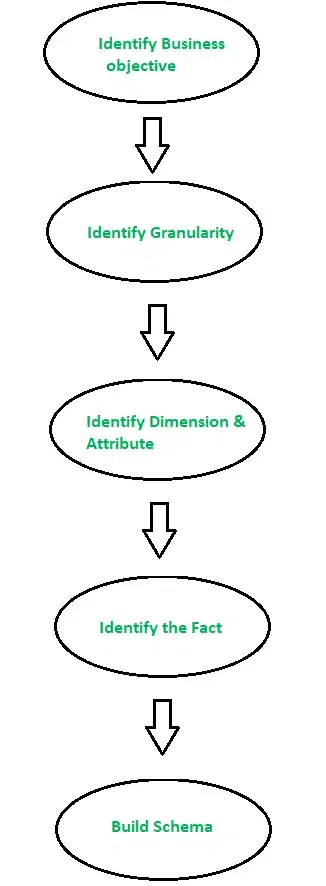
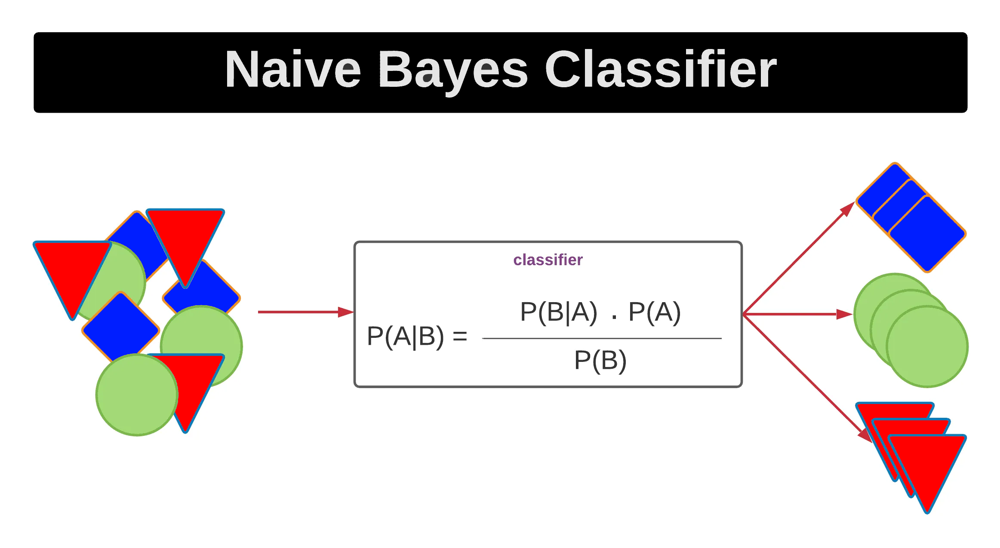

DMBI
Draw Data Warehousing Architecture (Q1 / 5 / May 23) (Q5 / 10 / Dec 23) (Q1 / 5 / Dec 22)
A data warehouse is a centralized repository for storing and managing large volumes of data from diverse sources, primarily focused on supporting analytical tasks and decision-making.

- Subject-Oriented:
- Data in a data warehouse is a collection of customer, product, sales, and other relevant data, rather than focusing on a single element.
- Data warehouses are used for reporting and ensuring data consistency.
- Integrated:
- All the relevant data is brought together from various applications in a data warehouse for decision making.
- Data integrity is important to ensure the consistency of the data.
- Time-Variant:
- The data warehouse consists of historical data along with current data.
- The time-variant feature manages past data to the present and forecasts future data.
- Data in a data warehouse is maintained weekly, monthly, quarterly, half-yearly, yearly, and so on.
- Non-Volatile:
- Data from operational systems is moved into the data warehouse at specific intervals.
- The relational database updates the operational database in real-time.
- You can change, insert, or delete data from the operational system, but not from the data warehouse.
- Once the data is moved into the data warehouse, it cannot be deleted in real-time.
- Data Mart
- It is the data-warehouse at departmental level.
- Metadata
- It is the data about data.
- Multidimensional data
- Data is viewed in multi-dimensions in data warehouse.
What is noisy data? How to handle noisy data? (Q1 / 5 / May 23) (Q5 / 10 / Dec 23)
Noisy data is a data set that contains unwanted, meaningless data, or data that is distorted, corrupted, or has a low signal-to-noise ratio. It can also include data that a user system cannot understand and interpret correctly. Noisy data can lead to inaccurate or misleading results, or a false sense of accuracy or false conclusions.

1. Binning
- Binning is a technique where we sort the data and then partition the data into equal frequency bins.
- Then you may either replace the noisy data with the bin mean bin median or the bin boundary. This method is to smooth or handle noisy data.
- There are three methods for smoothing data in the bin.
- Smoothing by bin mean method: In this method, the values in the bin are replaced by the mean value of the bin.
- Smoothing by bin median: In this method, the values in the bin are replaced by the median value.
- Smoothing by bin boundary: In this method, the using minimum and maximum values of the bin values are taken, and the closest boundary value replaces the values.
2. Regression
- This is used to smooth the data and help handle data when unnecessary data is present.
- For the analysis, purpose regression helps decide the suitable variable.
- Linear regression refers to finding the best line to fit between two variables so that one can be used to predict the other.
- Multiple linear regression involves more than two variables. Using regression to find a mathematical equation to fit into the data helps to smooth out the noise.
3. Clustering
- This is used for finding the outliers and also in grouping the data. Clustering is generally used in unsupervised learning.
4. Outlier Analysis
- Outliers may be detected by clustering, where similar or close values are organized into the same groups or clusters.
- Univariate outliers can be found when looking at a distribution of values in a single feature space.
- Multivariate outliers can be found in an n-dimensional space (of n-features). Looking at distributions in n-dimensional spaces can be very difficult for the human brain. That is why we need to train a model to do it for us.
- Point outliers are single data points that lay far from the rest of the distribution.
- Contextual outliers can be noise in data, such as punctuation symbols when realizing text analysis or background noise signal when doing speech recognition.
- Collective outliers can be subsets of novelties in data, such as a signal that may indicate the discovery of new phenomena.
Compare and contrast between OLTP and OLAP (Q1 / 5 / May 23)
| Feature | OLAP | OLTP |
|---|---|---|
| Full Form | Online Analytical Processing | Online Transaction Processing |
| Characterstics | Operational Processing | Information Processing |
| Orientation | Transaction | Analysis |
| User | Knowledgeable People | Normal People |
| Function | Decision Support | Day to Day Operation |
| Data | Current | Historical/Summarized |
| Access | Only Read | Read & Write |
| Focus | Information out | Data in |
| Accessed | 100 | Millions |
| No. of User | 1000 | 100 |
| Data Size | TB | GB |
| Query Types | Complex queries | Simple, standardized queries |
| Data Structure | Multidimensional | Relational |
Explain concept of information gain and gini value used in decision algorithm (Q1 / 5 / May 23) (Q1 / 5 / May 22)
- Information gain (IG)
- Different entropy between dataset before and after split.
- It work well with small partitions or distribution in data dataset.
- Calculates reduction in entropy & measure how well a given feature separate or classifies target classes.
- Feature with highest IG is selected as best one.
- Formula: Information Gain = Entropy(parent) - Entropy(children)
- Gini Index
- Formula subtracting the sum of square of probabilities of each class from 1.
- It work well with large partitions or distribution in data dataset.
- Gini Index = 1 - Σ (P(x=k))^2
What is Data mining? Explain KDD process with diagram (Q2 / 10 / May 23) (Q4 / 10 / Dec 23)
- Data mining refers to the process of extracting information from large data sets whereas data analysis is the process used to find patterns from the extracted information.
- Data Mining also known as Knowledge Discovery in Databases,
- KDD refers to the nontrivial extraction of implicit, previously unknown and potentially useful information from data stored in databases.
KDD Process:

Consider we have 27 participants in a survey given to us in shorted order: 13, 15, 16, 16, 19, 20, 20, 21, 22, 22, 25, 25, 25, 25, 30, 33, 33, 35, 35, 35, 35, 36, 40, 45, 46, 52, 70. Explain how to calculate mean, median, standard deviation, 1st and 3rd quartile for the following data and also compute the same. Show the Box and Whisker plot for the data. (Q2 / 10 / May 23)
- Participants (Total Data): 27
- Data: 13, 15, 16, 16, 19, 20, 20, 21, 22, 22, 25, 25, 25, 25, 30, 33, 33, 35, 35, 35, 35, 36, 40, 45, 46, 52, 70
Mean:
- Mean is the arithmetic average of data points.
- This is the addition of the numbers of data points and dividing by the total data points.
$$ Mean\ of\ Data\ Points = \frac{Addition\ of\ all\ the\ Data\ Points}{Total\ Data\ Points}$$
$$ Mean of Data Points = \frac {{13 + 15 + 16 + 16 + 19 + 20 + 20 + 21 + 22 + 22 + 25 + 25 + 25 + 25 + 30 + 33 + 33 + 35 + 35 + 35 + 35 + 36 + 40 + 45 + 46 + 52 + 70}}{27} $$
$$ Mean\ of\ Data\ Points = \frac{809}{27} = 29.96 $$
Median
- The median is the middle number in the data points when the numbers are listed in either ascending or descending order.
- If data points are not listed in any order then first arrange them in ascending order and then find out the Median.
Median when total Data Points (n) are ODD:
$$ Median = \Biggl(\frac{n + 1}{2}\Biggr)^{th}\ number $$
Median when total Data Points (n) are EVEN:
$$ Median = \frac{\bigl(\frac n2\bigr)^{th} number + \bigl(\frac {n + 1}{2}\bigr)^{th} number}{2} $$
- Here, the total data points are 27 which means ODD.
$$ Median\ of\ Data\ Points = \Biggl(\frac{27 + 1}{2}\Biggr)^{th}\ number = 14^{th}\ positioned\ number$$
Therefore,
$$ Median = 25 $$
Mode of Data Points
- The mode is the most frequently occurring number in the data points.
- Here, in the given data points numbers 25 and 35 are modes with the most frequent occurrence count of 4.
$$ Mode\ of\ Data\ Points = 25\ and\ 35\ (Occurence\ Count\ 4) $$
Midrange of Data Points
- Midrange is the difference between the highest and lowest values in the data points.
- It shows the halfway between the minimum and maximum numbers of the data points.
$$ Midrange\ of\ Data\ Points = \frac{Maximum\ Number\ in\ Data\ Points + Minimum\ Number\ in\ Data\ Points}{2} $$
$$ Midrange\ of\ Data\ Points = \frac{70 + 13}{2} = \frac{83}{2}$$
$$ Midrange\ of\ Data\ Points = 41.5$$
Q1, Q3 of Data Points
- Q1 and Q3 represent the Quartiles.
- In statistical measure, a quartile, is one type of quantile of three points (Q1, Q2, & Q3) that divides sorted data points into four equal groups in terms of count of numbers, each representing a fourth of the distributed sampled population.
- There are three quartiles as follows:
_The First Quartile (Q1)_ - t is a 1st quartile or lower quartile that separates the lowest 25% of data from the highest 75%.
$$ Lower\ Quartile\ (Q1) = \Biggl[(n + 1) \times \frac 14 \Biggr]^{th} number$$ $$ Q1 = (27 + 1) \times \frac 14 = \frac {28}{4} = 7^{th}\ positioned\ number $$ $$ Q1 = 20 $$
_The Second Quartile (Q2)_ - It is a 2nd quartile or middle quartile also same as Median it divides numbers into 2 equal parts.
$$ Middle\ Quartile\ (Q2) = \Biggl[(n + 1) \times \frac 24 \Biggr]^{th} number $$ $$ Q2 = (27 + 1) \times \frac 24 = \frac {56}{4} = 14^{th}\ positioned\ number $$ $$ Q2 =25 $$
_The Third Quartile (Q3)_ - It is a 3rd quartile or the upper quartile that separate the highest 25% of data from the lowest 75%.
$$ Upper\ Quartile\ (Q3) = \Biggl[(n + 1) \times \frac 34 \Biggr]^{th} number$$ $$ Upper\ Quartile\ (Q3) = (27 + 1) \times \frac34 = \frac {84}{4} = 21^{th}\ positioned\ number $$ $$ Q3 = 35 $$
- Based on Q1 & Q3 values Interquartile Range also calculated as follows:
$$ Interquartile\ Range = Q3 – Q1 = 35 - 20 = 15 $$
Boxplot of Data Points
- Box plots represent the graphical image of the concentration of the data points.
- The box plot is created based on the 5 values as follows:
- The Minimum Value = 13
- The First Quartile (Q1) = 20
- The Median (Q2) = 25
- The Third Quartile (Q3) = 35
- The Maximum Value = 70
- The box plot can be drawn either by vertically or horizontally.
- For the given data points Horizontal Box Plot can be drawn as follows:

Explain market Basket Analysis with example (Q3 / 10 / May 23)

- To uncover purchase pattern in any retail setting.
- To understand consumer behavior by identifying relationships between items that people buy.
Create
if-themscenario rules:- It item A is purchased then item B is likely to be purchased
- Example: People who buy green tea are also likely to buy honey
Association rule has 3 measures that express degree of confidence.
Support
$$support(A\rightarrow B) = {\text{No of transactions containing both A & B} \over \text{Total Transactions}}$$
Confidence
$$confidence(A\rightarrow B) = {\text{No of transactions containing both A & B} \over \text{Total Transactions}}$$
Left
$$left(A\rightarrow B) = {\text{No of transactions containing both B} \over \text{Total Transactions}}$$
Example:
| ID | Item |
|---|---|
| 1 | A, B, C |
| 2 | A, C, D |
| 3 | B, C, D |
| 4 | A, D, E |
| 5 | B, C, E |
| Rule | Support | Confidence | Lift |
|---|---|---|---|
| A -> D | 2/5 | 2/3 | 10/9 |
| A -> A | 2/5 | 2/4 | 5/6 |
| A -> C | 2/5 | 2/3 | 5/6 |
| B & C -> D | 1/5 | 1/3 | 5/9 |
Consider Training Dataset as given below. Use Naive Base Algorithm to determine whether it is advisable to play tennis on a day with hot temperature, rainy outlook, high humidity and weak wind? (Q3 / 10 / May 23) (Q3 / 10 / Dec 23) (Q2 / 10 / May 22)


$$v_{nb}(yes) = {P(yes)P(rain/yes)P(hot/yes)P(high/yes)P(weak/yes)}$$
$$v_{nb}(yes)={9 \over 14}\times{3\over9}\times{2\over9}\times{3\over9}\times{6\over9} = 0.0105$$
$$v_{nb}(no) = {P(no)P(rain/no)P(hot/no)P(high/no)P(weak/no)}$$
$$v_{nb}(no)={5 \over 14}\times{2\over5}\times{2\over5}\times{4\over5}\times{2\over5} = 0.0182$$

$\therefore V_{nb}(yes) < V_nb(no)$ it is not advisable to play tennis on a day with hot temperature, rainy outlook, high humidity and weak wind.
What is an outlier? Explain various methods for performing outlier analysis. (Q4 / 10 / May 23) (Q6 / 10 / Dec 23) (Q4 / 10 / May 22)
An outlier is a piece of data that is significantly different from the rest of the data points in a dataset or graph. It is an observation that lies an abnormal distance from other values in a random sample from a population. Outliers can be extreme values that stand out greatly from the overall pattern of values in a dataset or graph.
Outlier detection methods

- Supervised Outliers Detection: are used to separate data objects into outliers and normal class in a labelled data set.
- Unsupervised Outliers Detection: are used to find outliers in an unlabeled dataset by giving each object an outlier score which indicates its degree of abnormality.
- Semi-Supervised Outliers Detection: are used used when labels are available for only a small part of normal objects or outliers.
- Statistical Methods:
- it assumes that normal data objects follow a statistical model and outlier do not.

- Proximity Based Method
- It developed on assumption that the distance from a normal data object to its nearest neighbors is very small compared to the distance from an outlier to it nearest neighbor.

Use the Apriori algorithm to identify the frequent item-sets in the following database. Then extract the strong association rules from these sets. Assume Min Support 50% Min Confidence 75% (Q4 / 10 / May 23) (Q4 / 10 / Dec 23) (Q4 / 10 / May 22)
| T ID | Items |
|---|---|
| a | 1, 2, 4, 5, 6 |
| b | 2, 3, 5 |
| c | 1, 2, 4, 5 |
| d | 1, 2, 4, 5 |
| e | 1, 2, 3, 4, 5, 6 |
| f | 2, 3, 4 |
| g | 1, 2, 4, 5 |
Support = $3.5\over\text{total no. of items}$ = $3.5\over7$ = 0.5 = 50%
Min Confidence = 75% = 0.75
Frequency count K = 1:
| Item | Frequency |
|---|---|
| 1 | 5 |
| 2 | 7 |
| 3 | 3 |
| 4 | 6 |
| 5 | 6 |
| 6 | 2 |
Prune Step
Items that are less then 3.5 will be purged
| Item | Frequency |
|---|---|
| 1 | 5 |
| 2 | 7 |
| 4 | 6 |
| 5 | 6 |
Join Step K = 2
| Item | Frequency |
|---|---|
| {1, 2} | 5 |
| {1, 4} | 5 |
| {1, 5} | 5 |
| {2, 4} | 6 |
| {2, 5} | 6 |
| {4, 5} | 5 |
No item is less then 3.5, so none will be purged
Join Step K=3
| Item | Frequency |
|---|---|
| {1, 2, 4} | 5 |
| {1, 2, 5} | 5 |
| {1, 4, 5} | 5 |
| {2, 4, 5} | 5 |
No item is less then 3.5, so none will be purged
Join Step K=4
| Item | Frequency |
|---|---|
| {1, 2, 4, 5} | 5 |
No item is less then 3.5, so none will be purged
Association Rule
- {1} -> {2, 4, 5} = 5/5 = 1 = 100%
- {2} -> {1, 4, 5} = 5/7 = 0.71 = 71%
- {4} -> {1, 2, 5} = 5/6 = 0.71 = 83%
- {5} -> {1, 3, 4} = 5/6 = 0.83 = 83%
- {1, 2} -> {4, 5} = 5/5 = 1 = 100%
- {1, 4} -> {2, 5} = 5/5 = 1 = 100%
- {1, 5} -> {2, 4} = 5/5 = 1 = 100%
- {2, 4} -> {1, 5} = 5/6 = 0.83 = 83%
- {2, 5} -> {1, 4} = 5/6 = 0.83 = 83%
- {4, 5} -> {1, 2} = 5/5 = 1 = 100%
- {1, 2, 4} -> {5} = 5/5 = 1 = 100%
- {1, 2, 5} -> {4} = 5/5 = 1 = 100%
- {1, 4, 5} -> {2} = 5/5 = 1 = 100%
- {2, 4, 5} -> {1} = 5/5 = 1 = 100%
Cluster the following eight points (with (x, y) representing location) into three clusters: A1(2, 10), A2(2, 5), A3(8, 4), A4(5, 8), A5(7, 5), A6(6, 4), A7(1, 2), A8(4, 9). Assume Initial cluster centers are at: A1(2, 10), A4(5, 8) and A7(1, 2). The distance function between two points a = (x1, y1) and b = (x2, y2) is defined as P(a, b) = | x2 - x1 | + | y2 - y1 |. Use K-Means Algorithm to find the three cluster centers after the second iteration. (Q5 / 10 / May 23) (Q2 / 10 / Dec 23)
- Clusters: A1(2, 10), A2(2, 5), A3(8, 4), A4(5, 8), A5(7, 5), A6(6, 4), A7(1, 2), A8(4, 9)
- Initial cluster centers are: A1(2, 10), A4(5, 8) and A7(1, 2)
- C1(2, 10)
- C2(5, 8)
- C3(1, 2)
- The distance function between two points a = (x1, y1) and b = (x2, y2) is defined as: Ρ(a, b) = |x2 – x1| + |y2 – y1|
- Iterations: 2
Iteration 01
Calculating Distance Between A1(2, 10) and C1(2, 10)
Ρ(A1, Center A1) = |x2 – x1| + |y2 – y1|
= |2 – 2| + |10 – 10|
= 0
Calculating Distance Between A1(2, 10) and C2(5, 8)
Ρ(A1, C3) = |x2 – x1| + |y2 – y1|
= |5 – 2| + |8 – 10|
= 5
Calculating Distance Between A1(2, 10) and C3(1, 2)
Ρ(A1, C3)
= |x2 – x1| + |y2 – y1|
= |1 – 2| + |2 – 10|
= 1 + 8
= 9
In the similar manner, we calculate the distance of other points from each of the center of the three clusters.
| Given Points | C1 | C2 | C3 | Closest Cluster |
|---|---|---|---|---|
| A1(2, 10) | 0 | 5 | 9 | C1 |
| A2(2, 5) | 5 | 6 | 4 | C3 |
| A3(8, 4) | 12 | 7 | 9 | C2 |
| A4(5, 8) | 5 | 0 | 10 | C2 |
| A5(7, 5) | 10 | 5 | 9 | C2 |
| A6(6, 4) | 10 | 5 | 7 | C2 |
| A7(1, 2) | 9 | 10 | 0 | C3 |
| A8(4, 9) | 3 | 2 | 10 | C2 |
Formula: ((All unique 1st points)/Total No of point in cluter, (All unique 1st points)/Total No of point in cluter)
For Cluster-01:
- We have only one point A1(2, 10) in Cluster-01.
- So, cluster center remains the same.
- C1 = (2, 10)
For Cluster-02:
- Custer: A3(8, 4), A4(5, 8), A5(7, 5), A6(6, 4), A8(4, 9)
- ((8 + 5 + 7 + 6 + 4)/5, (4 + 8 + 5 + 4 + 9)/5) = (6, 6)
- C2 = (6, 6)
For Cluster-03:
- Custer: A2(2, 5), A7(1, 2)
- $((2 + 1)/2, (5 + 2)/2) = (1.5, 3.5)$
- C3 = (1.5, 3.5)
Iteration 02
Calculating Distance Between A1(2, 10) and C1(2, 10)
Ρ(A1, C1) = |x2 – x1| + |y2 – y1|
= |2 – 2| + |10 – 10|
= 0
Calculating Distance Between A1(2, 10) and C2(6, 6)
Ρ(A1, C2) = |x2 – x1| + |y2 – y1|
= |6 – 2| + |6 – 10|
= 8
Calculating Distance Between A1(2, 10) and C3(1.5, 3.5)
Ρ(A1, C3) = |x2 – x1| + |y2 – y1|
= |1.5 – 2| + |3.5 – 10|
= 7
In the similar manner, we calculate the distance of other points from each of the center of the three clusters.
| Given Points | C1 | C2 | C3 | Closest Cluster |
|---|---|---|---|---|
| A1(2, 10) | 0 | 8 | 7 | C1 |
| A2(2, 5) | 5 | 5 | 2 | C3 |
| A3(8, 4) | 12 | 4 | 7 | C2 |
| A4(5, 8) | 5 | 3 | 8 | C2 |
| A5(7, 5) | 10 | 2 | 7 | C2 |
| A6(6, 4) | 10 | 2 | 5 | C2 |
| A7(1, 2) | 9 | 9 | 2 | C3 |
| A8(4, 9) | 3 | 5 | 8 | C1 |
For Cluster-01:
- Custer: - A1(2, 10), A8(4, 9)
- ((2 + 4)/2, (10 + 9)/2) = (3, 9.5)
- C1(3, 9.5)
For Cluster-02:
- Custer: A3(8, 4), A4(5, 8), A5(7, 5), A6(6, 4)
- ((8 + 5 + 7 + 6)/4, (4 + 8 + 5 + 4)/4) = (6.5, 5.25)
- C2(6.5, 5.25)
For Cluster-03:
- Custer: - A2(2, 5), A7(1, 2)
- ((2 + 1)/2, (5 + 2)/2) = (1.5, 3.5)
- C3(1.5, 3.5)
After second iteration, the center of the three clusters are:
- C1(3, 9.5)
- C2(6.5, 5.25)
- C3(1.5, 3.5)
Compare Star schema, Snow flakes schema and Star/Fact constellation schema (Q5 / 10 / May 23) (Q2 / 10 / Dec 22)
| Feature | Star Schema | Snowflake Schema | Star/Fact Constellation Schema |
|---|---|---|---|
| Model Type | Top-down | Bottom-up | Combination |
| Table Structure | Fact & Dimension tables | Fact, Dimension & Sub-dimension tables | Multiple Fact tables sharing Dimension tables |
| Storage Space | More | Less | Moderate |
| Query Performance | Faster | Slower | Moderate (depends on complexity) |
| Normalization | Not used (denormalized) | Normalized & Denormalized | Denormalized |
| Design Complexity | Simple | Complex | More complex than Star Schema, Less complex than Snowflake |
| Query Complexity | Low | High | Can be high depending on the number of joins between fact tables |
| Understandability | Easy | Difficult | Moderate (depends on complexity) |
| Foreign Keys | Less | More | More than Star Schema, Less than Snowflake |
| Data Redundancy | High | Low | Moderate |
Dimensional Modeling (Q6 / 5 / May 23)
- Includes Star & Snowflakes
- Logical design technique for DWH
- Uses relational model,
- Composed of at lest one table with multipart key (Fact table) & set of smaller table (Dimensional tables)
- Used by OLAP systems.
- Elements of Dimensional Modeling:
- Facts: Facts are associated with dimensions, creating a relationship between the fact and descriptive data.
- Dimensions: Dimensions consist of attributes that describe the dimension, like product name, category, and price.
- Fact Table: Dimension tables are related to the fact table through foreign key relationships.
- Dimension Table: These tables define the dimensions of a fact and are joined to the fact table via foreign keys.

Random Forest Technique (Q6 / 5 / May 23)

Instead of relying on one decision tree, the random forest takes the prediction from each tree and based on the majority votes of predictions, and it predicts the final output.
The greater number of trees in the forest leads to higher accuracy and prevents the problem of overfitting.
Random forest technique also uses bagging and boosting technique.
Decision Tree Induction (Q5 / 5 / May 23)

A decision tree is a structure that includes a root node, branches, and leaf nodes. Each internal node denotes a test on an attribute, each branch denotes the outcome of a test, and each leaf node holds a class label. The topmost node in the tree is the root node.
In the context of Decision Tree Induction, the term "Induction" refers to the process of creating a decision tree model from a given dataset.
Cross Validation (Q6 / 5 / May 23)

- A technique used to evaluate the performance of a machine learning model and avoid over-fitting.
- It involves dividing the dataset into two parts: one for training and the other for testing.
- The model is trained on the training set and validated on the test set, and this process is repeated multiple times.
DBSCAN Algorithm (Q6 / 5 / May 23) (Q1 / 5 / May 23)

DBSCAN is a density based clustering based on connected region with high density.
Parameters Required For DBSCAN Algorithm
- Epsilon($\epsilon$): A distance measure that will be used to locate the points in the neighborhood of any point.
- MinPts: The minimum number of points clustered together for a region to be considered dense.
There parameters can understood if we explore two concepts called density reachability and density connectivity.
- Reachability: It tells weather a point is reachable or not from another point.
- Connectivity: It involves a transitivity based chaining-approach to determine whether points are located in a particular cluster.
- E.g: p & q points would be connected if $p \rightarrow r \rightarrow s \rightarrow t \rightarrow q$.
- where $p \rightarrow q$ implies $q$ is neighbor of $p$.
There are 3 types of points after the DBSCAN clustering is complete.
- Core: This is a point that has at least $m$ points within distance $n$ form itself.
- Border: This a point that has atlest core point at a distance $n$
- Noise: This is a point that is neither a core nor a border.
Explain the types of attributes used in data exploration. (Q1 / 10 / Dec 23)
Data exploration initial step in data analysis in which data analysis use data visualization & statistical techniques to describe dataset characterization (like size & accuaracy)
Types of Attributes
- Data objects
- comprise of form data sets.
- represents an entity.
- logical cluster of all table in data set which contain data related to same entity.
- Attributes Type
- Property or characteristic of data object.
- Normal Attribute
- Categorical attribute
- allow for only qualitative classification
- can be numbered arbitrarily.
- Arithmetic & logical operation can't be performed
- Eg: Own House: 1. Yes, 2. No
- Binary Attribute
- qualitative attribute
- has only 2 values/states (yes/no, true/false)
- Symmetric Binary Attribute
- Both values (0 & 1) equally valuable
- Can't decide which outcome should be a & which 1.
- Eg: Gender
- Asymmetric Binary Attribute
- Both values are not equally important
- Most important coded as 1 & other 2
- Eg: Result
- Ordinal Attribute
- Qualitative attribute
- Nominal attribute which has meaningful order or rank for its different states.
- Order of values show what is important but don't indicate how important it is.
- Eg: Gate: A, B, C, D, E, F, O
- Numeric Attribute
- quantifiable
- measured in term of quantity, which can either have an integer or real value.
- 2 types
- Internal Scaled
- Continuous measurement on a linear scale.
- Eg: Weight, height & weather temp.
- Allows for ordering, comparing & quantifying difference between values.
- Ratio scaled
- Continuous the measurements on non-linear scale.
- With zero-point
- Operation like addition, subtraction can be performed but multiplication & division not possible.
- Eg: If a liquid is at 40 degree & we add 10 degree, it will be 50 degree.
- Discrete Attributee
- quantitative attribute
- can be numerical & can also be in categorical form.
- If an attribute can take any value between 2 specified values, then it is continuous else it is discrete.
- Have finite or countably infinite set of values.
- Eg: Zipcode: 696969, 405405, 400052
Explain K-Mean algorithm detils. Apply K-Mean algorithm to divide the given set of values { 2, 3, 4, 10, 11, 12, 20, 25, 30 } into 2 cluters. (Q2 / 10 / Dec 23)
K-means clustering is simple unsupervised learning algorithm develooped by J. MacQueen in 1976 and J.A Hartigan & M.A wong in 1975.
K-means tries to partition x data points into the set of K clusters where each data point is assigned to its closest cluster.
Algorithm
Input:
K: number of clusters
D: a dataset containig 'n' objects
Output:
A set 'k' clusters
Methods
- Randomly partition the given dataset 'D' into 'k' clusters & final the cluster mean.
- Repeat
- Re-assign the data points to each cluster and find again the cluster mean.
- Update the cluster mean.
- Until no change.
Sum:
Sort: ${ 2, 3, 4, 10, 11, 12, 20, 25, 30 }$
Step 1: Randomly partition the dataset into two clusters and find the cluster mean:
$m_1 = 10, m_2 =25$
$K_1 = { 2, 3, 4, 10, 11, 12 }, K_2 = {20, 25, 30 }$
$m_1^1 = 10, m_2^1 = 25$
Step 2: Reassign the data points of each clusters and find again the cluster mean
$K_1 = { 2, 3, 4, 10, 11, 12}, K_2 = { 20, 25, 30}$
$m_1^1 = 1, m_2^1 = 25$
Step 3: Stop the cluster in step 1 and 2 are same
Final Answer
$K_1 = { 2, 3, 4, 10, 11, 12 }$
$K_2 = { 20, 25, 30 }$
Compare Bagging and Boosting of a classifier (Q2 / 10 / Dec 23)

| Feature | Bagging | Boosting |
|---|---|---|
| Training | Independent models on subsets | Sequential, focuses on errors |
| Model Dependence | Independent | Dependent, improves on errors |
| Weights | Equal weight | Performance-based weights |
| Focus | Reduces variance | Reduces bias & variance |
| Overfitting | Less prone | Can occur with many iterations |
| Cost | Lower (parallel training) | Higher (sequential training) |
| Best for | High variance, low bias | High variance & bias |
Explain Multilevel and Multidimensional Association rules with suitable examples. (Q3 / 10 / Dec 23) (Q2 / 10 / May 22)
Multilevel association rule

Association rule mining is used to discover relationships between items in a dataset. An association rule is a statement of the form "If A, then B," where A and B are sets of items.
The strength of an association rule is measured using two measures: support and confidence.
Support measures the frequency of the occurrence of the items in the rule, and confidence measures the reliability of the rule.
Approaches of Multilevel association rule:
- Using uniform support level for all levels
- There is only one minimum support threshold.

- Using reduced minimum support at lower level
- At every level of abstraction, there is its own minimum support threshold.
- So minimum support at lower level reduces

Multi-dimensional association rule

It contains more than one predicate. Each predicate occurs only once.
Single dimensional rule
Contains single distinct predicate like "buys"
buy(x, "milk") -> buys(x, "bread")
Multi-dimensional rules
- Contains more than one predicate
Inter-dimensional association rule
Has no repeated predicate
age(x, "19-25)^occupation(x, "student") -> buys(x, "coke")
Hybrid dimension association rule
Contains the multiple occurrence of same predicate
age(x, "19-25") ^ buys(x, "pop corns") -> (buys(x, "coke)
Categorical Attribute
- Have finite no. of possible values, no ordering among rules.
- Eg: brand, color
Quantitative Attribute
- These are numeric & implicit ordering among values
- Eg: age, income
Numerical : Smoothing by bin Mean, Median & Boundary (Q5 / 10 / Dec 23) (Q1 / 05 / Dec 22) (Q1 / 10 / May 22)
Given Data: 8, 16, 9, 15, 21, 21, 24, 30, 26, 27, 30, 34
Number of Bin: 2
Perform the Following:
- Partition into equal frequency bins
- Smoothing by bin means
- Smoothing by bin boundaries
- After Sorted: 8, 9, 15, 16, 21, 21, 24, 26, 27, 30, 30, 34
- Total Number of data: 12
- Assumed bin size: 3
Equal Frequency
- Sorted data: 8, 9, 15, 16, 21, 21, 24, 26, 27, 30, 30, 34
- Bins: Total Number of data / Assumed bin = 12/4
- Bin 1: 8, 9, 15, 16
- Bin 2: 21, 21, 24, 26
- Bin 3: 27, 30, 30, 34
Bin Means
- Sorted data: 8, 9, 15, 16, 21, 21, 24, 26, 27, 30, 30, 34
- Mean of Bin 1: (8 + 9 + 15 + 16 / 4) = 12
- Bin 1: 12, 12, 21, 12
- Mean of Bin 2: (21 + 21 + 24 + 26 / 4) = 23
- Bin 2: 23, 23, 23, 23
- Mean of Bin 3: (27 + 30 + 30 + 24 / 4) = 30
- Bin 3: 30, 30, 30, 30
Bin Boundary
- Sorted data: 8, 9, 15, 16, 21, 21, 24, 26, 27, 30, 30, 34
- Before bin Boundary: Bin 1: 8, 9, 15, 16
- After bin Boundary: Bin 1: 8, 8, 16, 16
- Before bin Boundary: Bin 2: 21, 21, 24, 26
- After bin Boundary: Bin 2: 21, 21, 26, 26
- Before bin Boundary: Bin 3: 27, 30, 30, 34
- After bin Boundary: Bin 3: 27, 27, 27, 34
Design BI system for Fraud Detection. Explain all steps from data collection to decision making.

- Data Collection and Pre-processing
- Collect data from various sources, including transactional systems, customer databases, web analytics, and third-party fraud detection services.
- Feature Engineering
- Extract relevant features from the collected data, such as transaction amount, location, merchant category, time of day, and user behavior patterns.
- Calculate additional features that may indicate fraudulent activities, like transaction frequency, average transaction amount, and deviation from usual spending patterns.
- Model Selection and Training
- Choose a suitable machine learning algorithm for fraud detection, such as supervised classifiers like Random Forest, Gradient Boosting, or Logistic Regression.
- Split the pre-processed dataset into training and test sets
- Real-Time Fraud Detection
- Integrate the trained model into a real-time system that monitors incoming transactions.
- Pre-process each incoming transaction by applying the same transformations as in the training phase.
- Alert Generation and Reporting
- Generate alerts for flagged transactions and notify appropriate personnel, such as fraud analysts or security teams.
- Provide a reporting interface to view and analyze detected fraudulent transactions, including transaction details and risk scores.
How to calculate the correlation coefficient for two numeric attributes and also comment on the significance of this value? (Q1 / 5 / Dec 22)
To calculate the correlation coefficient for two numeric attributes, you can use the Pearson Correlation Coefficient formula. Here is the formula and an explanation of its significance:
Pearson Correlation Coefficient Formula:
The Pearson Correlation Coefficient, denoted by "r," is calculated by dividing the covariance of the two variables by the product of their respective standard deviations. The formula is:
$$ r = \frac{n \sum{xy} - \sum{x} \sum{y}}{\sqrt{(n \sum{x^2} - (\sum{x})^2)(n \sum{y^2} - (\sum{y})^2)}} $$
- $$ n $$ = Number of observations
- $$ \sum{x} $$ = Sum of the first variable values
- $$ \sum{y} $$ = Sum of the second variable values
- $$ \sum{xy} $$ = Sum of the product of the first and second variable values
- $$ \sum{x^2} $$ = Sum of squares of the first variable values
- $$ \sum{y^2} $$ = Sum of squares of the second variable values
Significance of the Correlation Coefficient
- The correlation coefficient value always ranges between -1 and +1.
- A positive correlation coefficient indicates a similar and identical relationship between the two variables, while a negative value indicates dissimilarity.
- The closer the correlation coefficient is to 1 or -1, the stronger the linear relationship between the variables.
- A value of 0 means there is no linear relationship between the variables.
- The correlation coefficient helps in understanding the strength and direction of the linear relationship between the two variables, aiding in data analysis and decision-making.
Write a short note on support and confidence. (Q1 / 5 / Dec 22)
Support and confidence are two important measures used in association rule mining to evaluate the interestingness and strength of the generated rules.
Support
Support measures the frequency of a rule in the dataset. It represents the proportion of transactions that contain all the items in the rule antecedent and consequent.
The formula for calculating support is:
$$ Support(X \rightarrow Y) = P(X \cup Y) = \frac{\text{Number of transactions containing both X and Y}}{\text{Total number of transactions}} $$
Support helps in identifying the most frequent itemsets and rules in the dataset.
Confidence
Confidence measures the strength of the rule by calculating the conditional probability of the consequent given the antecedent.
The formula for calculating confidence is:
$$ Confidence(X \rightarrow Y) = P(Y|X) = \frac{\text{Number of transactions containing both X and Y}}{\text{Number of transactions containing X}} $$
Confidence represents the likelihood of the consequent occurring given that the antecedent has occurred.
Describe data reduction technique. (Q2 / 10 / Dec 22)

- Dimensionality Reduction:
- Reduces the number of features or dimensions in a dataset while preserving important information.
- Techniques include Principal Component Analysis (PCA), Independent Component Analysis (ICA), and t-SNE.
- Numerosity Reduction:
- Reduces the number of data points in a dataset while preserving the overall characteristics.
- Techniques include Parametric and Non-Parametric Numerosity Reduction, such as Linear Regression, Random Forest, Support Vector Machines, K-Means, and DBSCAN
- Data Cube Aggregation:
- Represents data in a cube format by performing aggregation on data.
- Each cell of the cube is a placeholder holding the aggregated data point, facilitating multidimensional analysis.
- Data Compression:
- Modifies, encodes, or converts the structure of data to consume less space.
- Techniques include Lossless Compression (e.g., Huffman Encoding, Run-Length Encoding) and Lossy Compression (e.g., Discrete Cosine Transform, Wavelet Compression).
- Discretization
- Divides continuous attributes into discrete intervals.
- Techniques include Top-Down Discretization (starts from the top and goes till the bottom) and Bottom-Up Discretization (begins from the bottom and goes up).
Write and explain Naive Bayes classification algorithm. (Q3 / 10 / Dec 22)

- Naïve Bayes algorithm is a supervised learning algorithm, which is based on Bayes theorem and used for solving classification problems.
- It is mainly used in _text classification_ that includes a high-dimensional training dataset.
- Naïve Bayes Classifier is one of the simple and most effective Classification algorithms which helps in building the fast machine learning models that can make quick predictions.
- It is a probabilistic classifier, which means it predicts on the basis of the probability of an object.
- Some popular examples of Naïve Bayes Algorithm are spam filtration, Sentimental analysis, and classifying articles.
- Why is it called Naïve Bayes?
- Naïve: It is called Naïve because it assumes that the occurrence of a certain feature is independent of the occurrence of other features.
- Bayes: It is called Bayes because it depends on the principle of Bayes' Theorem.
- Bayes' Theorem:

Write the steps of Ada-boost algorithm. (Q3 / 10 / Dec 22)

- Adaptive boosting
- This method operates iteratively, identifying misclassified data points and adjusting their weights to minimize the training error.
- The model continues to optimize sequentially until it yields the strongest predictor.
- implemented by combining several weak learners into a single strong learner.
- The weak learners in AdaBoost take into account a single input feature and draw out a single split decision tree called the decision stump.
- Each observation is weighted equally while drawing out the first decision stump.
- The results from the first decision stump are analyzed, and if any observations are wrongfully classified, they are assigned higher weights.
- A new decision stump is drawn by considering the higher-weight observations as more significant.
- Again if any observations are misclassified, they're given a higher weight, and this process continues until all the observations fall into the right class.
How data mining used in BI (Q4 / 10 / Dec 22)
Data mining refers to the process of extracting information from large data sets whereas data analysis is the process used to find patterns from the extracted information.

- Business Understanding
- Define the purpose of data mining for successful business analytics.
- Focus on how to utilize the data effectively.
- Clarify the data mining goal before selecting algorithms.
- Data Understanding
- Understand the data's purpose after defining the data mining goal.
- Data storage and monetization methods vary across businesses.
- Data management aligns with enterprise IT strategies and practices.
- Data Preparation
- Data engineers transform and cleanse data for non-IT interpretation.
- Data modeling tailored to specific attributes for analysis.
- Data Modeling
- Statistical algorithms reveal hidden data patterns.
- Iterative process to identify trends for revenue enhancement.
- Data Evaluation
- Scrutinize data modeling steps for accuracy.
- Focus on optimizing operations and increasing profits.
- Implementation
- Act on findings to drive observable results.
- Conduct field trials on a small scale before wider implementation.
- Transition validated recommendations to branch outlets for expansion.
Give an overview of partition clustering methods. (Q4 / 10 / Dec 22)

Partitional clustering methods are a family of clustering algorithms used to classify observations in a dataset into multiple groups based on their similarity. These methods require the analyst to specify the number of clusters to be generated. The most commonly used partitional clustering methods are:
K-Means Clustering
- K-means is a centroid-based technique that partitions the data into K clusters145.
- It randomly assigns K objects from the dataset as initial cluster centroids4.
- Each data point is then assigned to the nearest centroid based on distance45.
- The centroids are updated by calculating the mean of the assigned data points45.
- The process iterates until convergence, where no more changes occur in cluster assignments45.
K-Medoids Clustering
- K-medoids, also known as Partitioning Around Medoids (PAM), is similar to K-means but uses medoids instead of centroids as cluster representatives2.
- Medoids are actual data points closest to the center of the cluster2.
- PAM is less sensitive to outliers compared to K-means2.
How can we further improve the efficiency of Apriori-based mining? (Q5 / 10 / Dec 22)
Apriori-based mining refers to a data mining technique that utilizes the Apriori algorithm to discover frequent itemsets and association rules in a dataset.
To further improve the efficiency of Apriori-based mining, several methods and techniques can be employed.
Hash-Based Technique
- Utilize a hash-based structure like a hash table to generate k-itemsets and their corresponding counts efficiently.
- Implement a hash function to create the hash table, reducing the computational complexity of generating and storing itemsets. Transaction Reduction
- Reduce the number of transactions scanned during iterations by eliminating transactions that do not contain frequent items.
- Mark or remove transactions that do not contribute to frequent itemset discovery, streamlining the mining process. Partitioning
- Employ a partitioning technique that requires only two scans of the database to mine frequent itemsets.
- Subdivide the transactions into non-overlapping partitions, ensuring that potentially frequent itemsets are discovered in at least one partition. Sampling
- Opt for a sampling approach by selecting a random sample (S) from the database and searching for frequent itemsets within the sample.
- Adjust the sample size to balance accuracy and efficiency, enabling the search for frequent itemsets in main memory with reduced computational overhead. Dynamic Itemset Counting
- Implement a technique that dynamically adds new candidate itemsets during database scanning at marked start points.
- Enhance the algorithm's adaptability by incorporating new candidate itemsets efficiently during the scanning process.
Explain OLAP operations with examples. (Q5 / 10 / Dec 22) (Q2 / 10 / May 23)
OLAP stands for _Online Analytical Processing_ Server. It is a software technology that allows users to analyze information from multiple database systems at the same time.

- Drill down: In drill-down operation, the less detailed data is converted into highly detailed data.
- Example: In the cube given in overview section, the drill down operation is performed by moving down in the concept hierarchy of _Time_ dimension (Quarter -> Month).

Roll up: It is just opposite of the drill-down operation.
- Example: In the cube given in the overview section, the roll-up operation is performed by climbing up in the concept hierarchy of _Location_ dimension (City -> Country).

Dice: It selects a sub-cube from the OLAP cube by selecting two or more dimensions.
- Example: a sub-cube is selected by selecting following dimensions with criteria:
- Location = “Delhi” or “Kolkata”
- Time = “Q1” or “Q2”
- Item = “Car” or “Bus”

- Example: a sub-cube is selected by selecting following dimensions with criteria:
Slice: It selects a single dimension from the OLAP cube which results in a new sub-cube creation.
- Example: Slice is performed on the dimension Time = “Q1”

Pivot: It is also known as _rotation_ operation as it rotates the current view to get a new view of the representation.
- Example: In the sub-cube obtained after the slice operation, performing pivot operation gives a new view of it.

Describe the classification performance evaluation measures that can be obtained from a confusion matrix. (Q5 / 10 / Dec 22)
Normalize the following group of data using two methods: min-max normalization and z-score normalization: 1000, 2000, 3000, 5000, 9000. Use min-max normalization by setting min: 1000 & max: 9000 and z-score normalization. (Q5 / 10 / Dec 22)
Min-max
- Data: 1000, 2000, 3000, 5000, 9000
- Min-Max formula:
$$V = \frac{x-min}{max-min}$$
- Min: 1000
- Max: 9000
| Data($V$) | Normalization | Normalized Data ($v$) |
|---|---|---|
| 1000 | $\frac{10000-1000}{9000-1000}$ | 0 |
| 2000 | $\frac{20000-1000}{9000-1000}$ | 0.125 |
| 3000 | $\frac{30000-1000}{9000-1000}$ | 0.25 |
| 5000 | $\frac{50000-1000}{9000-1000}$ | 0.5 |
| 9000 | $\frac{90000-1000}{9000-1000}$ | 1 |
Z-Score
- Data: 1000, 2000, 3000, 5000, 9000
- Z-Score Formula:
$$z=\frac{x-\mu}{\sigma}$$
- Mean: $\mu$ =
$$\frac{1000 + 2000 + 3000 + 5000 + 9000}{5}= 4000$$
- Standard Deviation: $\sigma$ =
$$\sqrt{\frac{\sum{(x_i-\mu)^2}}{n-1}}$$
$$=\sqrt{\frac{(1000-4000)^2+(2000-4000)^2+(3000-4000)^2+(5000-4000)^2+(9000-4000)^2}{5-1}}$$
$$=2489.97$$
- Answer:
| Data($V$) | Normalization | Normalized Data ($v$) |
|---|---|---|
| 1000 | $\frac{10000-4000}{2489.97}$ | -1.204 |
| 2000 | $\frac{20000-4000}{2489.97}$ | -0.803 |
| 3000 | $\frac{30000-4000}{2489.97}$ | -0.4016 |
| 5000 | $\frac{50000-4000}{2489.97}$ | -0.4016 |
| 9000 | $\frac{90000-4000}{2489.97}$ | 2.0088 |
What is BI? Explain Architecture in detail. (Q3 / 10 / May 22)
Business intelligence (BI) are the tools that deploys technologies, applications and practices to collect, integrate, analyze and present business information.
Architecture

- Data Collection: Gathering data from various sources such as CRM, ERP, databases, files, or APIs, depending on the requirements and resources of a company.
- Data Integration: Extracting data and loading it into a BI data warehouse architecture through ETL (Extract-Transform-Load) process.
- Data Storage: Data warehousing and business intelligence concepts. Data is loaded into a data depository after ensuring data is clean and prepared for analysis.
- Data Analysis: Statistical algorithms are deployed to decipher hidden patterns in data.
- Data Visualization: Analytical tools like dashboards facilitate the way most organizations deal with their data.
Briefly explain Bagging and Boosting (Q4 / 10 / May 22)
Bagging
- Bootstrap Aggregating is the full form of Bagging.
- Bagging is an ensemble method that generates additional data for training from the dataset.
- Bagging helps to reduce the variance error and over-fitting issues in a model.
- Bagging is a parallel method that fits different, considered learners independently from each other, making it possible to train them simultaneously.
- Bagging generates multiple classifiers that are combined using average or majority voting.
- Bagging is suitable for unstable classifiers with high variance.
- Bagging is more robust and resilient, making it particularly suitable for challenging and dynamic real-world scenarios.
Boosting
- Boosting is an ensemble method that provides sequential learning of the predictors.
- Boosting is a homogeneous weak learners’ model but works differently from Bagging.
- Boosting aims to reduce bias and improve accuracy.
- Boosting starts by classifying the original data set and giving equal weights to each observation.
- If classes are predicted incorrectly using the first learner, then it gives higher weight to the misclassified observation.
- Boosting is an iterative process that continues to add classifier learners until a limit is reached in the number of models or accuracy.
- Boosting has shown better predictive accuracy than Bagging, but it also tends to over-fit the training data.
- Boosting is suitable for stable and simple classifiers with high bias.
Suppose we have six objects with names A, B, C, D, E and F. Apply single linkage clustering and draw a dendrogram for the given data. (Q3 / 10 / May 22)
| X | Y | |
|---|---|---|
| A | 1 | 1 |
| B | 1.5 | 1.5 |
| C | 5 | 5 |
| D | 3 | 4 |
| E | 4 | 4 |
| F | 3 | 3.5 |